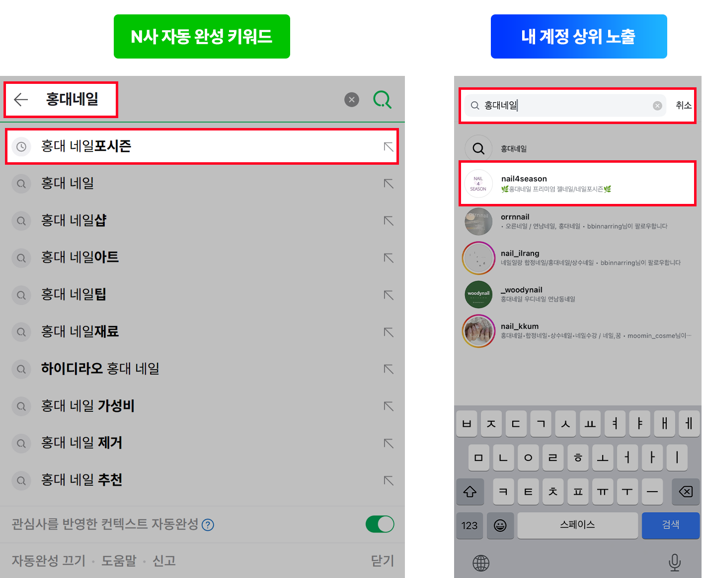
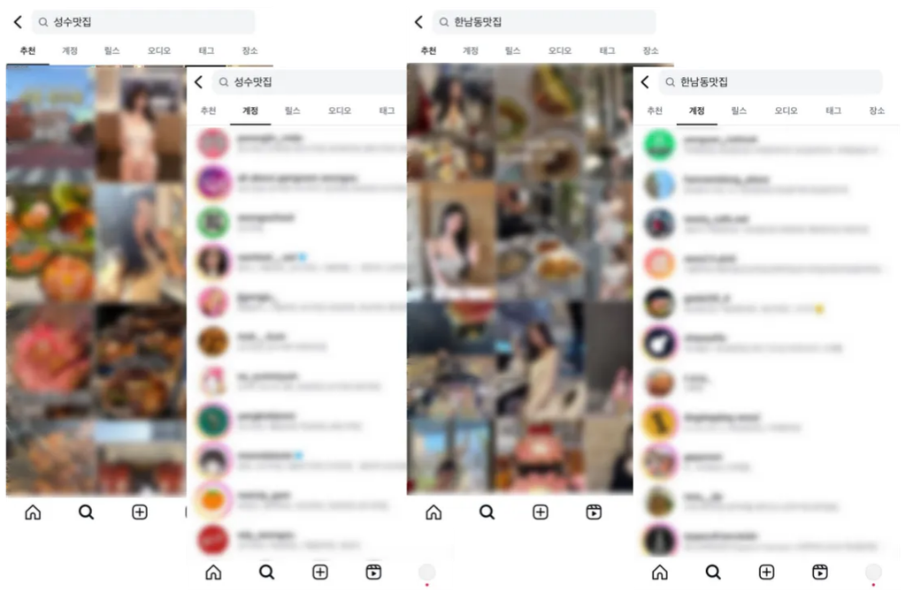
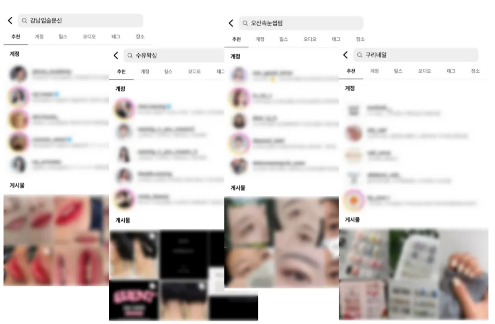
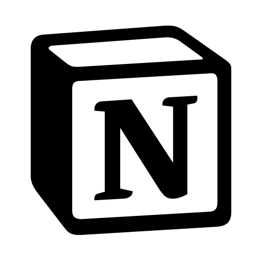

[계정탭] 계정 상위 노출 · 자동완성
01. Service Overview
브랜드의 공식성과 신뢰도를 높이는 핵심 수단
계정탭은 검색 결과 첫 페이지 최상단에 위치하여 사용자의 시선을 가장 먼저 사로잡는 영역입니다.
이곳은 자사의 공식 계정을 효과적으로 알릴 수 있을 뿐만 아니라, 브랜드의 존재감과 신뢰도를 직관적으로 전달하는 핵심 채널입니다.
검색 결과 상단에 공식 계정이 노출될 경우, 소비자는 해당 브랜드를 보다 공신력 있고 안정적인 존재로 인식하게 됩니다.

고객이 직접 검색하고 찾아오는 구조 (Inbound)
특정 키워드를 검색한 사용자는 이미 구매 의사가 있는 잠재 고객입니다. 광고처럼 무작위로 노출되는 아웃바운드 방식과 달리, 계정탭 상위 노출은 관심 있는 고객이 스스로 찾아오는 인바운드(Inbound) 구조를 만들어 줍니다.

[자동완성어, N사와 비교 화면]
02. Why This Service?
Trend, 변화하는 UI에 대한 대응
[과거]

[현재]

과거에는 계정탭과 추천탭이 독립적으로 분리되어 있었으나, 최근 인스타그램 UI 개편으로 계정탭이 검색 결과 최상단에 통합 노출되는 방식으로 변화하였습니다. 이에 따라 계정탭 상위 노출의 마케팅적 가치가 크게 높아졌습니다.
서비스 핵심 가치
구매 의사 있는 잠재 고객 선점
검색 결과 최상단 계정탭 위치
키워드 입력 시 브랜드 자연 노출
최신 인스타그램 UI 구조 대응
기대 효과

- 경쟁사 대비 우위 선점 (Interception) — 잠재 고객이 경쟁사 계정을 접하기 전, 브랜드를 먼저 인식시킵니다.
- 자동완성 효과 (Branding) — 키워드 입력 단계부터 브랜드 노출이 시작되어 인지도 상승을 유도합니다.
- 안정적인 DB 확보 (Stability) — 지속적인 계정 유입을 통해 팔로워 및 잠재 고객 데이터베이스를 안정적으로 구축합니다.
- 마케팅 피로도 감소 (Inbound System) — 고객이 스스로 찾아오는 구조이므로 반복 광고 집행 부담이 줄어듭니다.
참고 자료: 레퍼런스

위 레퍼런스는 계정탭 상위 노출 서비스의 실제 적용 사례 및 효과를 정리한 자료입니다. 업종별 키워드 경쟁도와 노출 현황을 확인하실 수 있습니다.
03. Process & Pricing
서비스 가격 안내
| 구분 | 1슬롯당 단가 (VAT 별도) | 월 예상 비용 (2슬롯 기준) | 혜택 및 할인 |
|---|---|---|---|
| 1개월 (30일) | 150,000원 | 300,000원 | • 기본 순위 관리 |
| 3개월 (90일) | 120,000원 | 240,000원 | • 총 18만원 할인 (월 6만원 ↓) |
"권장 슬롯으로 진행 시, 검색 결과 5위 이내 진입을 보장합니다."
키워드 경쟁도에 따라 권장 슬롯 개수가 상이할 수 있습니다. 사전 분석 후 최적 슬롯 수를 안내드립니다.
진행 프로세스
견적 상담
타겟 키워드 및 경쟁도 분석 (슬롯 수 산정)
세팅 최적화
[필수] 노출을 위한 최적화 프로필 세팅 (하단 가이드 참조)
결제
서비스 비용 결제 진행
작업 착수
세팅 완료 후 순위 진입 작업 진행
보고 및 관리
매주 월, 목요일 노출 현황 및 순위 변동 보고
[필수] 계정 이름 세팅 가이드
변경 경로:
설정(≡) → 계정 센터 → 프로필 → 계정 선택 → 이름
- 입력 제한: 최대 64자까지 입력 가능
- 띄어쓰기 주의! 키워드는 띄어쓰기 없이 붙여서 작성해야 합니다.
가능 '왕십리맛집' — 붙여쓰기
불가 '왕십리 맛집' — 띄어쓰기 포함 시 작업 불가
[변경 예시] 입술문신(메인키워드) · 강남입술문신 · 홍대입술문신 · 잠실입술문신
예상 소요 기간
- 순위 진입 기간: 첫 페이지 노출까지 평균 14일 소요
- 진행 슬롯 개수가 많을수록, 더 짧은 기간 내 높은 순위로 진입이 가능합니다.
- 계정의 활동량·팔로워·게시물 수 등 계정 지수에 따라 상승 속도가 상이할 수 있습니다.
유의 사항
-
신규/휴면 계정: 생성한 지 3개월 미만의 신규 계정 혹은 장기간 활동이 없었던 계정일 경우, 계정 지수가 낮아 순위 진입 기간이 길어지거나 작업 효과가 제한될 수 있습니다. 사전 계정 최적화 작업을 권장드립니다.
→ 계정 최적화 · 자동 활동 안내 페이지 바로가기
계정 상위 노출 · 자동완성 서비스에 대해 더 궁금하신 점이 있으신가요?
전문 마케팅 서비스 전문 컨설턴트가 맞춤 상담을 도와드립니다.